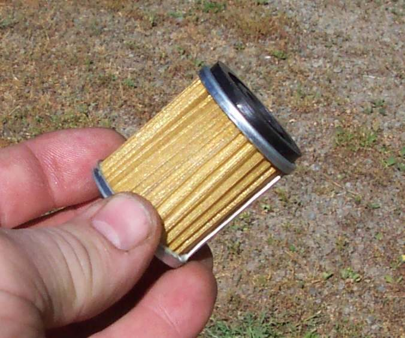

The engine becomes noisy, hot or locked up shortly after the oil and filter were changed. The most common reason is that the engine has no oil or the oil is not circulating. Oil starvation damages an engine within minutes.
Is it safe to ride?
No. Stop the engine at once if the oil light is on, if there is a new tick or knock, or if oil is not reaching the top of the engine.
Quick checks first
- Is there oil in the engine? Check the level with the bike upright.
- Is the drain plug in and tight, and is there a puddle under the bike?
- Is the oil light on or flickering?
- Has the filter or element just been changed?
Diagnose it step by step
1Is the oil level correct on the dipstick, window or plug?
- No oil, or very low: do not start the engine. Add oil to the correct level. Look for the cause: drain plug left out or loose, filter loose.
- Level is correct: go to step 2.
2Was a paper element fitted? Was it fitted the right way round?
- Not sure, or fitted backwards: some one-hole elements fit one way only, and a wrong fit cuts off the oil supply. Open the housing and check against the manual. See Change a spin-on or paper oil filter.
- Correct: go to step 3.
3Was the screen on the drain plug refitted correctly and not blocked?
- A blocked screen cuts the oil to the head. See Clean the oil screen in the drain plug or filter chamber.
4Does oil reach the top of the engine?
- Test with Check that oil is reaching the top of the engine. Little or no oil: do not ride.
5Is there already knocking, grinding or a locked engine?
- Yes: damage may have happened. See Assess bottom end and internal engine damage.
Causes, most likely first
| Cause | How to confirm | Fix |
|---|---|---|
| No or low oil after the change | Dipstick dry, puddle under bike | Add oil and find the leak |
| Element fitted backwards | Matches the one-way fit in the manual | Refit the right way |
| Blocked oil screen | Screen clogged with debris | Clean it |
| Level read wrongly after filling | Level rechecked after a run is low | Refill and recheck |
| Worn oil pump | No oil at the check point, correct level | Workshop |
After a filter change, the level falls as the filter fills. Run the engine for a minute, let it rest, then check the level again.